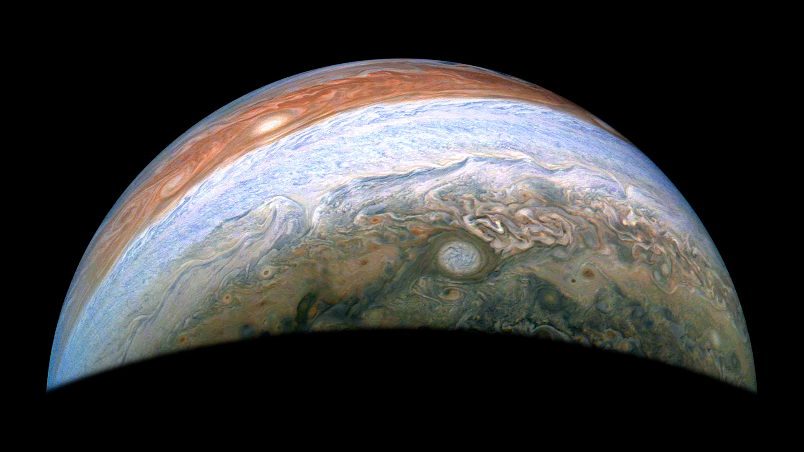

Above: Orange Band, processed by Jackie Branc
Jupiter, developed by strangers
JunoCam was carried to Jupiter as an outreach instrument. The mission posts the raw frames and invites anyone to download them, process them, and upload the result. Almost every Jupiter picture you have seen from this spacecraft passed through someone's afternoon.
The gallery it feeds now runs to hundreds of pages of public submissions. The thirty frames collected here are a small sample of what happens when a spinning camera's output is handed to a crowd. Filter them, open one, and look closely. Two of them — Cyclone, As Received and Cyclone, Lifted — are the same frame twice; press Compare to put them side by side.
Side by side
{{ compareHint }}What you are
looking at
Jupiter has about 318 times the mass of Earth and no surface to land on — it is hydrogen and helium nearly all the way down, thickening from gas into a hot metallic fluid. It also spins faster than anything else in the solar system, turning once in under ten hours, which is why the disc in these frames is visibly wider than it is tall. That rotation is what organises the weather into stripes: pale zones where gas rises, dark belts where it sinks, separated by jet streams that Juno has found run thousands of kilometres deep rather than sitting on the surface like Earth's.
The poles look nothing like the stripes. Juno was the first spacecraft to fly over them, and found cyclones parked in a geometric arrangement: one giant storm at the north pole with eight more encircling it, and a smaller group at the south. They do not wander off or die out the way hurricanes do — they oscillate around fixed positions and drift slowly around the pole. Almost every polar frame in this gallery is a picture of that arrangement seen from a different angle.
A camera that cannot hold still
JunoCam is a pushframe imager. Its filter strips are bonded directly onto the detector — 1600 pixels wide, about 155 rows high — and the spacecraft's own rotation scans them across the planet. At the nominal two revolutions per minute, a frame lands roughly every 400 milliseconds.
Four filters and a trick
Three visible strips — red, green, blue — plus a narrowband methane filter near 890 nanometres. The spin would smear anything exposed longer than 3.2 milliseconds, so the camera shifts the image down one row every 3.2 milliseconds to cancel the motion, up to about a hundred steps.
Eight bits, and fading
Pixels leave the detector 12 bits deep and are companded to 8 bits inside the instrument; that is the form the public gets. Jupiter's radiation belts are steadily degrading the camera — later perijoves show reduced dynamic range and more noise, which is now part of the processing problem.
What counts as processing
The invitation is deliberately loose. Cropping counts. So does pulling one atmospheric feature out of the murk, pushing colour past what the eye would see, stitching frames into collages, or reconstructing colour from the separate filter strips. The only hard rules are about logos and decency.
What comes back has been used well beyond the gallery. Public versions illustrate articles about the mission, get shown to the scientific community, and appear in journal papers with attribution. Some of it the team simply treats as art.
Why the pictures keep changing
No two people develop the same frame the same way. Colour balance, stretch, sharpening and geometry are all judgement calls, and the raw 8-bit data leaves plenty of room for them. Compare any two versions of the same perijove and the disagreement is the point.
The camera is also getting harder to read. Radiation has cut its dynamic range and raised its noise floor, and the mission has openly asked citizen scientists to find new ways to work with what is left.